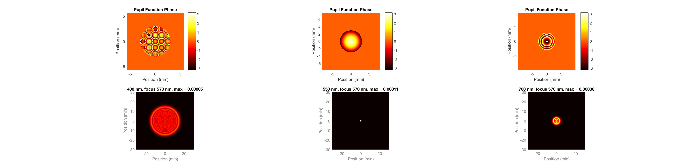
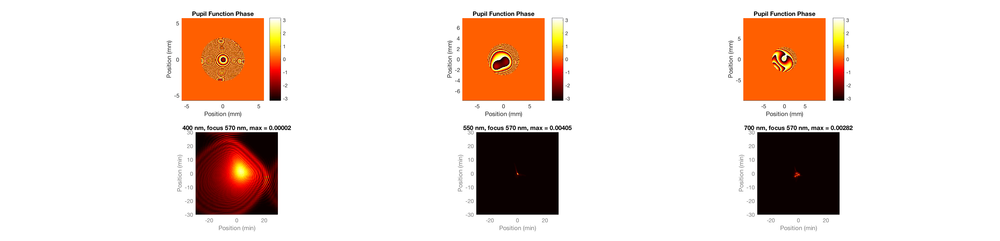
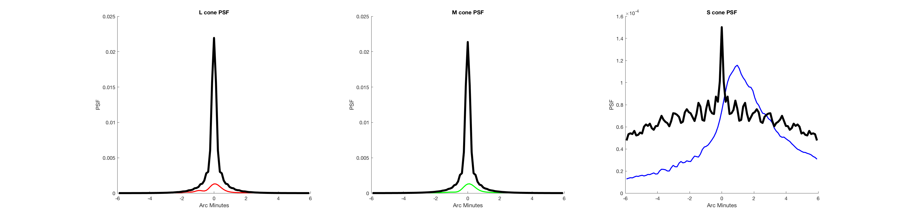
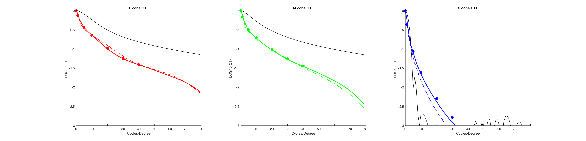

Contents
- Function implementing the isetbio validation code
- Initialize
- Some informative text
- Parameters
- Test data
- Initialize wvf structure
- Include SCE if desired
- Compute LMS psfs both for a subject and diffraction limited
- Center and circularly average if desired
- Make a figure comparable to Autrusseau et al, Figure 2 (top row) and Figure 4b (bottom row).
- Make a plot through the peak of the returned LMS PSFs
- Take a look in frequency domain.
function varargout = v_wvfComputeConePSF(varargin) % % Test the routines that compute L, M, and S cone PSFs from Zernike coefficients. % % Replicates figures from % Autrusseau et al., 2011, Vision Research, 51, 2282-2294. % % The diffraction limited calcs seem to match up with their % Figure 2 pretty well, the MTFs agree well, and Figures 4A % and B are reproduced to good approximation. There are % small differenes in the max PSF between our calculation and % their Figure 4A/B. These may be due to differences in how % the pupil/psf plane are sampled. One of the S cone MTF % points is also off, but not by more than might be attributable % to digitization error of their Figure 11. % % This script actually checks many things, in that the agreement % between what's calculated here and Figure 4A/B checks relies on % many things being done in the same way. % % See also: wvfComputeConePSF, wvfComputePSF, wvfComputePupilFunction, % sceGetParams, wvfGetDefocusFromWavelengthDifference % % 8/21/11 dhb Wrote it. % 3/15/12 mdl Edited to use wvfSet. Also updated to use fieldSampleSizeMMperPixel % 7/20/12 dhb Got TEST1 to work without crashing, and possibly even to be correct. % 7/23/12 dhb OTF plot is looking vaguely reasonable. % Added Autrusseau equal energy OTFs for comparison % 8/18/15 dhb UnitTestToolbox'ize. varargout = UnitTest.runValidationRun(@ValidationFunction, nargout, varargin); end
Function implementing the isetbio validation code
function ValidationFunction(runTimeParams)
Initialize
close all; ieInit;
Some informative text
UnitTest.validationRecord('SIMPLE_MESSAGE', 'Check L, M, S cone PSFs.');
Parameters
Autruesseau et al. did not incorporate a model of the SCE, nor did they center or circularly average the PSFs. These switches let us play with those things if we want.
Note that the Autrusseau paper does not account for the SCE. This actually matters enough to be easily visible on the graphs.
DOSCE = 0; CIRCULARLYAVERAGE = 0; CENTER = 0; plotLimit = 6; plotLimitFreq = 80;
Test data
dataSource = 'AutrusseauStandard'; switch (dataSource) case 'AutrusseauStandard'; % This is the Autrusseau standard observer. % % Their coefficients are for a measured % pupil of 6 mm and that their calculations are % also for 6 mm. They use 570 nm as their % measured (in focus) wavelength. [Their methods, % p. 2284]. % % It appears that they do not zero the j = 4 % coefficient at their in focus wavelength. % This is deduced by the fact that we get agreement % with their calculations without zeroing it out. whichSubject = 1; dataFile = 'autrusseauStandardObserver.txt'; theZernikeCoeffs = importdata(dataFile); measPupilMM = 6; calcPupilMM = 6; measWavelength = 570; case 'ThibosStatisticalModelMean' % This is the mean data from the Thibos model % for a 6 mm pupil. The methods of the Autrusseau % indicate that they only used the first 15 (starting % at j = 0 coefficients, so we lop them off at 15 % (j = 14). % % Note that the comparison to Figure 11 of their % paper is not meaningful for this case. whichSubject = 1; load('IASstats60','sample_mean'); theZernikeCoeffs = sample_mean; theZernikeCoeffs = theZernikeCoeffs(1:15); measPupilMM = 6; calcPupilMM = 6; measWavelength = 570; end UnitTest.validationData('dataSource', dataSource); % Cone sensitivities and equal energy weighting spectrum load('T_cones_ss2'); conePsfInfo.S = S_cones_ss2; conePsfInfo.T = T_cones_ss2; conePsfInfo.spdWeighting = ones(conePsfInfo.S(3),1); % Calculation wavelengths for PSF. wls = SToWls([400 10 31]);
Initialize wvf structure
wvf0 = wvfCreate; % Set important parameters wvf0 = wvfSet(wvf0,'measured pupil size',measPupilMM); wvf0 = wvfSet(wvf0,'calc pupil size',calcPupilMM); wvf0 = wvfSet(wvf0,'zcoeffs',theZernikeCoeffs(:,whichSubject)); wvf0 = wvfSet(wvf0,'measured wavelength',measWavelength); wvf0 = wvfSet(wvf0,'calc wavelengths',wls); wvf0 = wvfSet(wvf0,'calc cone psf info',conePsfInfo); % The short wavelength PSFs get blurred enough that we need more pixels to % contain them than our defaults provide. Adjust this to keep sempling density % in psf plane the same, but increase space sampled. Autrusseau et al seem % to have used 1 degree as the extent in the psf domain (based on Figure 4). % You can see in their figure that this is not big enough -- the 400 nm psf % for their standard observer (first panel in Figure 4b) wraps. % % With our default pupil plane parameters, 497 samples corresoponds closely to 1 degree % sampling. The code below prints out what you get. origSamples = wvfGet(wvf0,'number spatial samples'); newSamples = 497; wvf0 = wvfSet(wvf0,'number spatial samples',newSamples); fprintf('Sampling pupil plane/psf with %d pixels\n',wvfGet(wvf0,'number spatial samples')); fprintf('Pupil plane info\n'); for wavelength = [400 500 600 700]; fprintf('\t%d nm, %0.1f mm, %0.3f mm/pixel\n',... wavelength,wvfGet(wvf0,'pupil plane size','mm',wavelength),wvfGet(wvf0,'pupil plane size','mm',wavelength)/wvfGet(wvf0,'number spatial samples')); end fprintf('PSF plane info\n'); for wavelength = [400 500 600 700]; fprintf('\t%d nm, %0.1f minutes, %0.3f min/pixel\n',... wavelength,wvfGet(wvf0,'psf angle per sample','min',wavelength)*wvfGet(wvf0,'number spatial samples'),wvfGet(wvf0,'psf angle per sample','min',wavelength)); end
Sampling pupil plane/psf with 497 pixels Pupil plane info 400 nm, 11.4 mm, 0.023 mm/pixel 500 nm, 14.2 mm, 0.029 mm/pixel 600 nm, 17.1 mm, 0.034 mm/pixel 700 nm, 19.9 mm, 0.040 mm/pixel PSF plane info 400 nm, 60.1 minutes, 0.121 min/pixel 500 nm, 60.1 minutes, 0.121 min/pixel 600 nm, 60.1 minutes, 0.121 min/pixel 700 nm, 60.1 minutes, 0.121 min/pixel
Include SCE if desired
if (DOSCE == 1) sce = sceCreate(wls,'berendschot_data','centered'); wvf0 = wvfSet(wvf0,'sce params',sce); else sce = sceCreate(wls,'none'); wvf0 = wvfSet(wvf0,'sce params',sce); end
Compute LMS psfs both for a subject and diffraction limited
wvfParams1 = wvf0; wvfParams1 = wvfComputePSF(wvfParams1); conePsf1 = wvfGet(wvfParams1,'cone psf'); wvfParams2 = wvf0; wvfParams2 = wvfSet(wvfParams2,'zcoeffs',0); wvfParams2 = wvfComputePSF(wvfParams2); conePsf2 = wvfGet(wvfParams2,'cone psf'); % This bit is a sanity check that our code yields constant sampling in the psf domain. % Also compute arcminutes per pixel. whichRow = wvfGet(wvfParams1,'middle row'); for i = 1:length(wls) if (wvfGet(wvfParams1,'psf arcmin per sample',wls(1)) ~= wvfGet(wvfParams1,'psf arcmin per sample',wls(i))) error('Error in spatial sampling consistency across wavelengths'); end end arcminutes1 = wvfGet(wvfParams1,'psf arcmin per sample',wls(1))*((1:wvfGet(wvfParams1,'spatial samples'))-whichRow); arcminutes = wvfGet(wvfParams1,'psf angular samples','min',wls(1)); UnitTest.assertIsZero(max(abs(arcminutes(:)-arcminutes1(:))),'Angular samples compare',0);
Center and circularly average if desired
if (CENTER) lpsf = psfCenter(conePsf1(:,:,1)); mpsf = psfCenter(conePsf1(:,:,2)); spsf = psfCenter(conePsf1(:,:,3)); lpsfd = psfCenter(conePsf2(:,:,1)); mpsfd = psfCenter(conePsf2(:,:,2)); spsfd = psfCenter(conePsf2(:,:,3)); else lpsf = conePsf1(:,:,1); mpsf = conePsf1(:,:,2); spsf = conePsf1(:,:,3); lpsfd = conePsf2(:,:,1); mpsfd = conePsf2(:,:,2); spsfd = conePsf2(:,:,3); end if (CIRCULARLYAVERAGE) lpsf = psfCircularlyAverage(lpsf); mpsf = psfCircularlyAverage(mpsf); spsf = psfCircularlyAverage(spsf); lpsfd = psfCircularlyAverage(lpsfd); mpsfd = psfCircularlyAverage(mpsfd); spsfd = psfCircularlyAverage(spsfd); end UnitTest.validationData('lpsf', lpsf); UnitTest.validationData('mpsf', mpsf); UnitTest.validationData('spsf', spsf); UnitTest.validationData('lpsfd', lpsfd); UnitTest.validationData('mpsfd', mpsfd); UnitTest.validationData('spsfd', spsfd);
Make a figure comparable to Autrusseau et al, Figure 2 (top row) and Figure 4b (bottom row).
This shows diffraction limited and standard observer PSFs at different wavelengths, given focus at 570. If the angular extent of the PSF is 1 degree, these should match up well with Figure 2 of Autresseau (diffraction limited) and Figure 4. Look at 4a if the computation is for the Thibos mean and Figure 4b if the computation is for the Autrusseau standard observer.
Note that the 400 nm psf wraps at 400 nm in Figure 4b for the standard observer calculation.
The figure here also shows the pupil function phase, just for grins.
A useful figure to look at in comparing the figures generated here and in the paper is the maximum of the psf. This is reported in the Autrusseau figures and also in ours.
% Diffraction limited (Figure 2) wavelengths = [400 550 700]; vcNewGraphWin([],'wide'); % position = get(gcf,'Position'); % position(3) = 1600; position(4) = 800; % set(gcf,'Position',position); for i = 1:length(wavelengths); wavelength = wavelengths(i); subplot(2,length(wavelengths),i); hold on [nil,p] = wvfPlot(wvfParams2,'image pupil phase','mm',wavelength,'no window'); focusWl = wvfGet(wvfParams2,'measured wavelength'); subplot(2,length(wavelengths),i+length(wavelengths)); hold on psf = wvfGet(wvfParams2,'psf',wavelength); maxVal = max(psf(:)); % [nil,p] = wvfPlot(wvfParams2,'2d psf angle','min',wavelength,'no window'); [nil,p] = wvfPlot(wvfParams2,'image psf angle','min',wavelength,'no window'); h = get(p,'Parent'); view([0 90]); ylim([-30 30]); xlim([-30 30]); axis('square'); title(sprintf('%d nm, focus %d nm, max = %0.5f',wavelength,focusWl,maxVal)); end % With aberrations (Figure 4) vcNewGraphWin([],'wide'); % position = get(gcf,'Position'); % position(3) = 1600; position(4) = 800; % set(gcf,'Position',position); for i = 1:length(wavelengths); wavelength = wavelengths(i); subplot(2,length(wavelengths),i); hold on [nil,p] = wvfPlot(wvfParams1,'image pupil phase','mm',wavelength,'no window'); %h = get(p,'Parent'); %view([0 90]); ylim([-30 30]); xlim([-30 30]); axis('square'); %title(sprintf('%d nm, focus %d nm, max = %0.5f',wavelength,focusWl,maxVal)); subplot(2,length(wavelengths),i+length(wavelengths)); hold on psf = wvfGet(wvfParams1,'psf',wavelength); maxVal = max(psf(:)); %[nil,p] = wvfPlot(wvfParams1,'2d psf angle','min',wavelength,'no window'); [nil,p] = wvfPlot(wvfParams1,'image psf angle','min',wavelength,'no window'); h = get(p,'Parent'); view([0 90]); ylim([-30 30]); xlim([-30 30]); axis('square'); title(sprintf('%d nm, focus %d nm, max = %0.5f',wavelength,focusWl,maxVal)); end 
Make a plot through the peak of the returned LMS PSFs
Compare with diffraction limited + defocus
% The position setting was a bit specific to some monitor. I tried to make % vcNewGraphWin do the right thing. vcNewGraphWin([],'wide'); % position = get(gcf,'Position'); % position(3) = 1600; % set(gcf,'Position',position); subplot(1,3,1); hold on onedLPSF = lpsf(whichRow,:); onedLPSFD = lpsfd(whichRow,:); index = find(abs(arcminutes) < plotLimit); plot(arcminutes(index),onedLPSF(index),'r','LineWidth',2); plot(arcminutes(index),onedLPSFD(index),'k','LineWidth',4); xlabel('Arc Minutes'); ylabel('PSF'); if (CIRCULARLYAVERAGE) title('Circularized L cone PSF'); else title('L cone PSF'); end subplot(1,3,2); hold on onedMPSF = mpsf(whichRow,:); onedMPSFD = mpsfd(whichRow,:); index = find(abs(arcminutes) < plotLimit); plot(arcminutes(index),onedMPSF(index),'g','LineWidth',2); plot(arcminutes(index),onedMPSFD(index),'k','LineWidth',4); xlabel('Arc Minutes'); ylabel('PSF'); if (CIRCULARLYAVERAGE) title('Circularized M cone PSF'); else title('M cone PSF'); end subplot(1,3,3); hold on onedSPSF = spsf(whichRow,:); onedSPSFD = spsfd(whichRow,:); index = find(abs(arcminutes) < plotLimit); plot(arcminutes(index),onedSPSF(index),'b','LineWidth',2); plot(arcminutes(index),onedSPSFD(index),'k','LineWidth',4); xlabel('Arc Minutes'); ylabel('PSF'); if (CIRCULARLYAVERAGE) title('Circularized S cone PSF'); else title('S cone PSF'); end drawnow;
Take a look in frequency domain.
Perhaps we should be using psf2otf, but it centers its output in a counterintuitive way and the fft seems like it should work just fine.
Autrusseau et al. appear to find the OTF by explicitly convolving the PSF with vertical gratings of different spatial frequencies, but that seems inefficient relative to believing the fft.
lotf = fftshift(fft2(lpsf)); motf = fftshift(fft2(mpsf)); sotf = fftshift(fft2(spsf)); lotfd = fftshift(fft2(lpsfd)); motfd = fftshift(fft2(mpsfd)); sotfd = fftshift(fft2(spsfd)); % Figure out the scale in the frequency domain. % % Logic is that one pixel in the frequency domain % is one cycle per image. So find size of image % in degrees and use this to find the numbers % of cycles per degree corresponding to each pixel. % Then produce a variable that corresponds to % cycles per degree. totalDegrees = (arcminutes(end)-arcminutes(1))/60; cyclesDegreePerPixel = 1/totalDegrees; cyclesdegree = cyclesDegreePerPixel*((1:wvfGet(wvfParams1,'number spatial samples'))-whichRow); % Read in Autrusseau MTF data for comparison % % Autrussea et al. didn't use the Fourier transform % instead literally convolved the psf at each wavelength % with a sinusoidal stimulus at the same wavelength, and then summed % up the results over wavelength, weighting by the cone sensitivities. autrusseauFigure11 = ReadStructsFromText('autrusseauFigure11.txt'); % Make a plot of the vertical grating LMS MTFs (solid colored line, taken as % middle row of full MTFs) that we get, and compare to what Autrusseau et al. got. % Dashed colord line is horizontal grating MTFs. Black lines are MTFs for % diffraction plus defocus theFig = vcNewGraphWin([],'wide'); clf; subplot(1,3,1); hold on onedLOTFH = abs(lotf(whichRow,:)); onedLOTFV = abs(lotf(:,whichRow)); onedLOTFD = abs(lotfd(whichRow,:)); index = find(abs(cyclesdegree) < plotLimitFreq); plot(cyclesdegree(index),log10(onedLOTFH(index)),'r','LineWidth',2); plot(cyclesdegree(index),log10(onedLOTFV(index)),'r:','LineWidth',2); plot([autrusseauFigure11.sf_cpd],log10([autrusseauFigure11.Lmtf_ees]),'ro','MarkerSize',8,'MarkerFaceColor','r'); plot(cyclesdegree(index),log10(onedLOTFD(index)),'k','LineWidth',1); xlim([0 plotLimitFreq]); ylim([-3 0]); xlabel('Cycles/Degree'); ylabel('LOG10 OTF'); if (CIRCULARLYAVERAGE) title('Circularized L cone PSF'); else title('L cone OTF'); end subplot(1,3,2); hold on onedMOTFH = abs(motf(whichRow,:)); onedMOTFV = abs(motf(:,whichRow)); onedMOTFD = abs(motfd(whichRow,:)); index = find(abs(cyclesdegree) < plotLimitFreq); plot(cyclesdegree(index),log10(onedMOTFH(index)),'g','LineWidth',2); plot(cyclesdegree(index),log10(onedMOTFV(index)),'g:','LineWidth',2); plot([autrusseauFigure11.sf_cpd],log10([autrusseauFigure11.Mmtf_ees]),'go','MarkerSize',8,'MarkerFaceColor','g'); plot(cyclesdegree(index),log10(onedMOTFD(index)),'k','LineWidth',1); xlim([0 plotLimitFreq]); ylim([-3 0]); xlabel('Cycles/Degree'); ylabel('LOG10 OTF'); if (CIRCULARLYAVERAGE) title('Circularized M cone PSF'); else title('M cone OTF'); end subplot(1,3,3); hold on onedSOTFH = abs(sotf(whichRow,:)); onedSOTFV = abs(sotf(:,whichRow)); onedSOTFD = abs(sotfd(whichRow,:)); index = find(abs(cyclesdegree) < plotLimitFreq); plot(cyclesdegree(index),log10(onedSOTFH(index)),'b','LineWidth',2); plot(cyclesdegree(index),log10(onedSOTFV(index)),'b:','LineWidth',2); plot([autrusseauFigure11.sf_cpd],log10([autrusseauFigure11.Smtf_ees]),'bo','MarkerSize',8,'MarkerFaceColor','b'); plot(cyclesdegree(index),log10(onedSOTFD(index)),'k','LineWidth',1); xlim([0 plotLimitFreq]); ylim([-3 0]); xlabel('Cycles/Degree'); ylabel('LOG10 OTF'); if (CIRCULARLYAVERAGE) title('Circularized S cone PSF'); else title('S cone OTF'); end drawnow;
end % Need to come back to this code and get it working. % % %% TEST2. Optimize focus and add to the plot. % % % % This takes a long time. % % % %Should be using sets/gets % % wvfParams3 = wvf0; % wvfParams3.coneWeights = [1 1 0]; % wvfParams3.criterionFraction = 0.9; % % % This takes a long time and produces an error that could be fixed by BW, % % but he is too lazy. % % Error using wvfGet (line 590) % % Must explicitly compute PSF on wvf structure before getting it. Use wvfComputePSF % % wvfParams3 = wvfComputeOptimizedConePSF(wvfParams3); % % lpsfo = psfCenter(wvfParams3.conepsf(:,:,1)); % mpsfo = psfCenter(wvfParams3.conepsf(:,:,2)); % spsfo = psfCenter(wvfParams3.conepsf(:,:,3)); % if (CIRCULARLYAVERAGE) % lpsfo = psfCircularlyAverage(lpsfo); % mpsfo = psfCircularlyAverage(mpsfo); % spsfo = psfCircularlyAverage(spsfo); % end % onedLPSFo = lpsfo(whichRow,:); % onedMPSFo = mpsfo(whichRow,:); % onedSPSFo = spsfo(whichRow,:); % % figure(theFig); % subplot(1,3,1); % plot(arcminutes(index),onedLPSFo(index),'r','LineWidth',4); % subplot(1,3,2); hold on % plot(arcminutes(index),onedMPSFo(index),'g','LineWidth',4); % subplot(1,3,3); hold on % plot(arcminutes(index),onedSPSFo(index),'b','LineWidth',4); % drawnow;